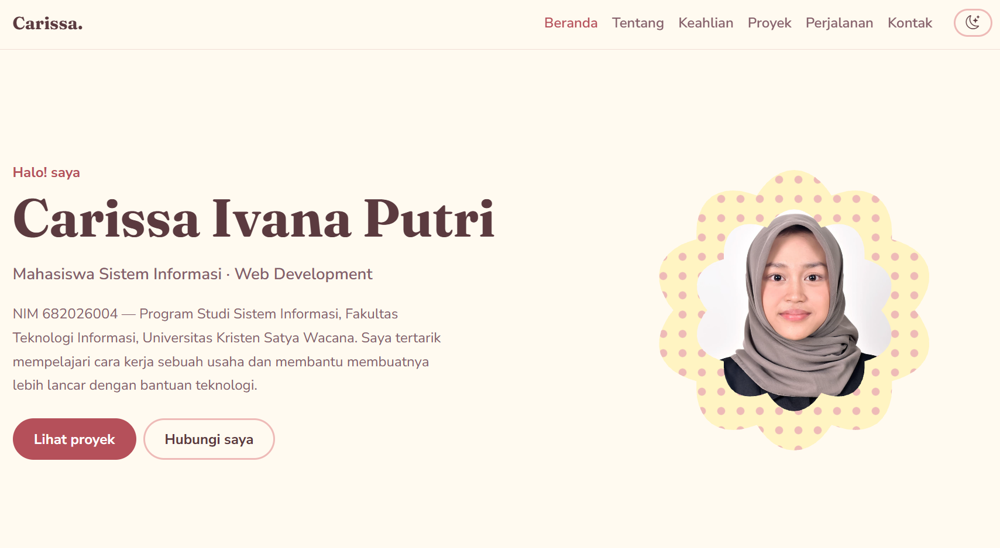
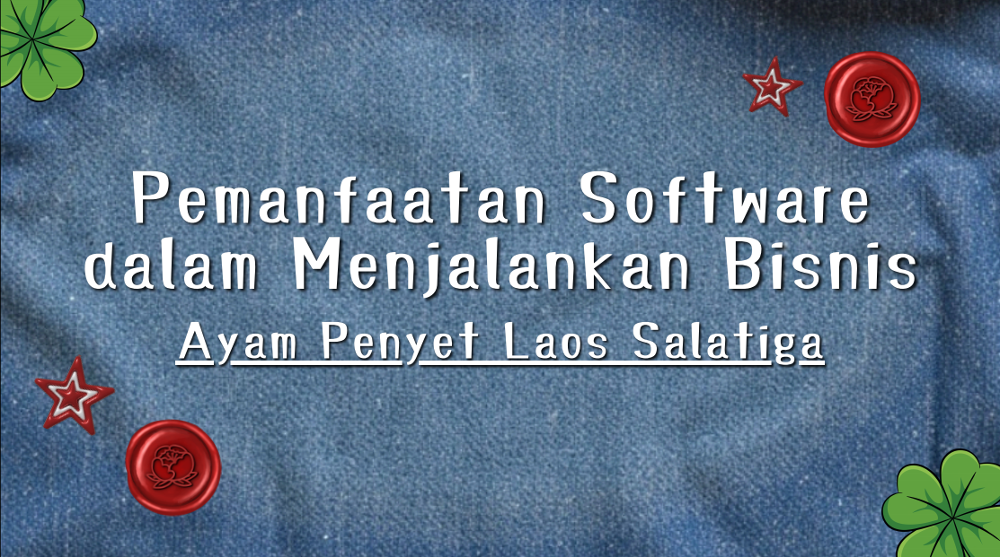
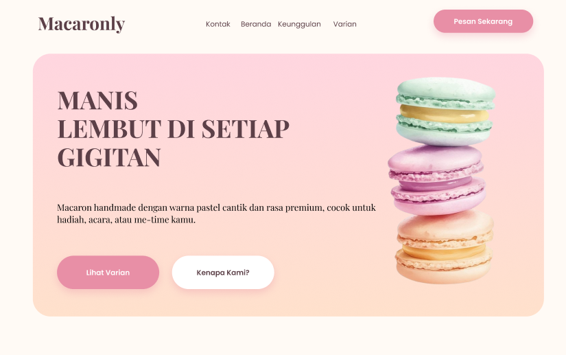

Website Portofolio Pribadi
Merancang dan membangun halaman web profil pribadi yang responsif menggunakan HTML dan CSS untuk menampilkan informasi diri serta riwayat kegiatan.
HTML5 Bootstrap
Lihat detail
Halo! saya
Mahasiswa Sistem Informasi · Web Development
NIM 682026004 — Program Studi Sistem Informasi, Fakultas Teknologi Informasi, Universitas Kristen Satya Wacana. Saya tertarik mempelajari cara kerja sebuah usaha dan membantu membuatnya lebih lancar dengan bantuan teknologi.
Halo! Nama saya Carissa Ivana Putri, seorang mahasiswa Program Studi Sistem Informasi di Fakultas Teknologi Informasi, Universitas Kristen Satya Wacana. Saya berasal dari Kabupaten Semarang dan saat ini sedang menempuh semester 1. Saya memilih bidang teknologi informasi karena tertarik melihat bagaimana teknologi dapat mempermudah pekerjaan sehari-hari dan membantu suatu usaha berjalan lebih rapi.
Dalam perkuliahan, saya memiliki minat khusus di bidang pengembangan web (web development) dan analisis sistem. Saat ini, saya sedang aktif mempelajari dasar-dasar pembuatan website menggunakan HTML dan CSS, serta belajar merancang tampilan antarmuka yang nyaman dan mudah digunakan oleh pengguna.
Untuk tujuan jangka pendek, saya ingin terus mengasah kemampuan teknis dengan mengerjakan berbagai proyek pembuatan website yang nyata. Ke depannya, saya berharap dapat mengikuti program magang atau berkolaborasi dalam proyek tim untuk menambah pengalaman praktis sebelum terjun ke dunia kerja.
Pilih kategori untuk menyaring kemampuan.
Beberapa karya yang pernah saya kerjakan.

Merancang dan membangun halaman web profil pribadi yang responsif menggunakan HTML dan CSS untuk menampilkan informasi diri serta riwayat kegiatan.

Memetakan proses operasional dan transaksi penjualan pada UMKM hardware ke dalam bentuk flowchart terstruktur untuk membantu pemilik usaha mengidentifikasi kendala dan merapikan pencatatan.

Merancang tampilan antarmuka promosi produk macaron bernuansa pastel di Figma, lengkap dengan penempatan tombol aksi (CTA) yang jelas untuk memudahkan pengguna melakukan pemesanan.
Langkah-langkah yang membawa saya ke dunia IT.
Mulai tertarik dengan dunia teknologi karena ingin mengetahui lebih luas bagaimana teknologi dimanfaatkan untuk menjalankan dan mengembangkan sebuah bisnis.
Mulai menempuh pendidikan di Program Studi Sistem Informasi, Fakultas Teknologi Informasi, Universitas Kristen Satya Wacana.
Mulai aktif mengikuti kelas praktikum dan mengerjakan tugas-tugas dasar pembuatan halaman web menggunakan HTML dan CSS.
Membangun portofolio ini dari nol dengan HTML5, Bootstrap 5, dan JavaScript.